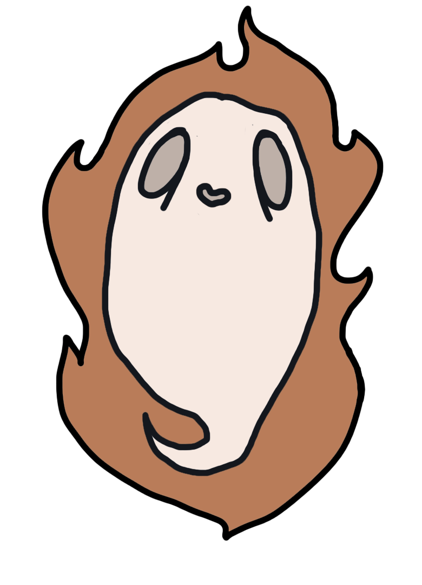
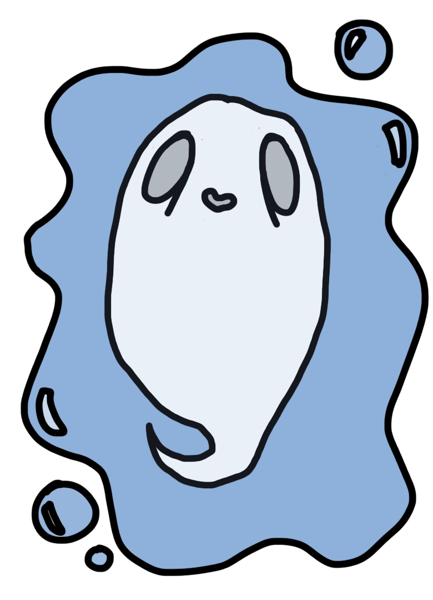
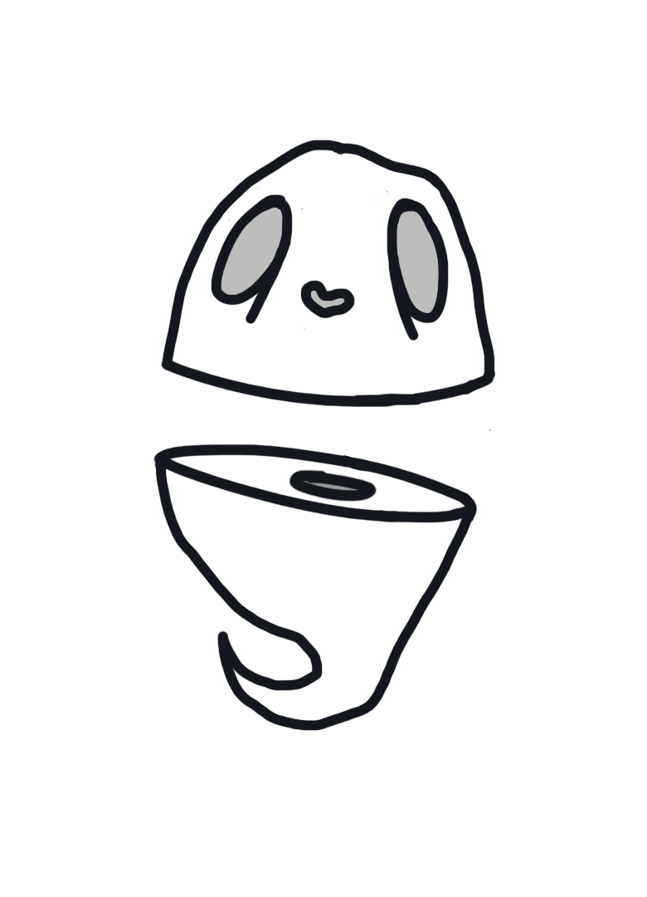
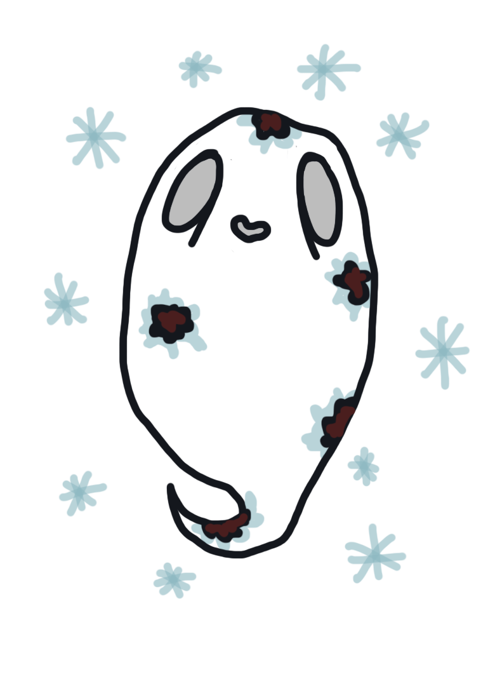

It had been a long day so you jumped into the shower to clean up. You had tripped and dropped things constantly all day, but twas normal as you have the unfortunate diagnosis: butter fingers. Unfortunately as you were washing your hair, shampoo got in your eye, and when you reached for a towel, you knocked the bar of soap of its ledge and onto the floor. You then proceeded to slip on said bar of soap..
Pro: You are eternally clean!
Con: You are eternally.. au naturel.. 
It was a Friday night and you were partying it up at your friends like always. It was outside and they had lit a fire for s'mores and hot dogs. Oblivious to anything that wasn't about you, you ended up standing close to the fire pit. You wanted to grab the parties attention so you began to tell a story. All eyes were on you as you told your story but you got a bit too enthusiastic waving your arms around, and lost balance.. into the fire pit.
Pro: You will always be the hottest ghosti in the room!
Con: You are constantly sweating.. 
You had just got home from being in public all day and needed some you-time so you decided to go for a night swim in the local lake. You began to float on your back to look at the stars when you felt something brush past your leg. You wrote it off as a fish and continued star gazing. You felt it again, this time it lingered before rushing off again. You closed your eyes to calm yourself. A second later you were at the bottom of the lake.
Pro: Swimming is fun
Con: Swimming forever.. maybe not

It was Nerd Con once again. It was an all out geek paradise but what you were most excited about was the epic samurai sword from your favorite samurai drama, The Saucy Samurais of Sendai. It was used in the season 8 finale to defeat the awful what's-his-face. You raced your friend to see who could find the booth first. It was all fun and games until you looked back and ran straight into the booth.. and the sword.
Pro: It's like wearing a crop top!
Con: You misplace your other half quite often..

Out in the middle of nowhere is where you felt at home. Surrounded by trees and other nature things. It was going to be a wonderful weekend of campfires, fishing, and sleeping under the stars. You had put up your tent and were starting a fire when you heard footsteps. As you bent down to get your flashlight you looked over to see a crazed lumberjack... running at you, full force, axe in hand. Maybe he thought you were a tree?
Pro: ...not much
Con: You have a splitting headache

You were the most unique person alive and you knew it. No one as weird as you. Your favorite thing to say was that you weren't like the other ones. You were special and you made sure everyone knew it. You decided to go out into the blizzard to take an aesthetic selfie in a crop top, how quirky! Unfortunately you were home alone and managed to lock yourself outside. How's the frostbite feel you special little snowflake?
Pro: You are truely a special little snowflake now...
Con: ...underneath all that frostbite